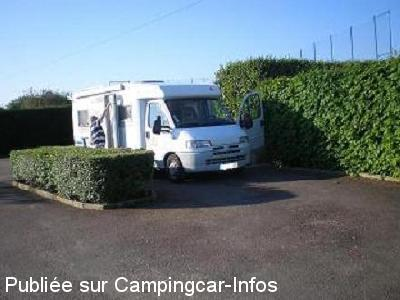
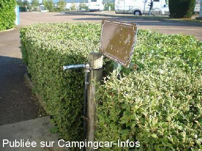
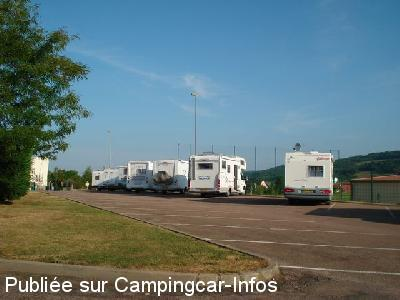
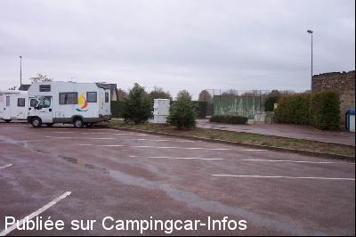

ASN = Aire de services avec stationnement nuit possible de :
SEMUR EN AUXOIS
(N° 328)
Accès/adresse :
Avenue Louis Pasteur
Parking du complexe sportif, derrière la gendarmerie
21140 SEMUR EN AUXOIS
Parking du complexe sportif, derrière la gendarmerie
21140 SEMUR EN AUXOIS
Latitude : (Nord) 47.49486° Décimaux ou 47° 29′ 41′′
Longitude : (Est) 4.3494° Décimaux ou 4° 20′ 57′′
Tarif : Gratuit
Services :


Restauration, commerces, laverie
Autres informations :
Aire accessible toute l'année
Tel + 33(0)380 970 111

Le 28/05/2011 par nenettemamita

Le 28/05/2011 par nenettemamita

Le 01/10/2009 par mataf59

Le 29/10/2003 par dufour
de
Franck
le 25/07/2013 :
Toujours aussi calme, bien agencée et propre...
La ville est très agréable
Une aire à recommander
Toujours aussi calme, bien agencée et propre...
La ville est très agréable
Une aire à recommander
de
vivianne et françois de la Bougrière City
le 03/10/2012 :
Passés le 10 septembre 2012 - très calme - services gratuits - appréciable
Passés le 10 septembre 2012 - très calme - services gratuits - appréciable
de
Jean-Philippe Urvoy
le 11/09/2012 :
Nous sommes passés le 12 août, allèchés par les bonnes opinions. Nous ne pouvons que les confirmer.
Grande aire pouvant accueillir une bonne vingtaine de camping cars. Néanmoins très tranquille. Il faut cependant compter près de 20 minutes pour se rendre à pied (par une superbe allée de marronniers)jusqu'à la ville qu'il faut absolument visiter.
Nous sommes passés le 12 août, allèchés par les bonnes opinions. Nous ne pouvons que les confirmer.
Grande aire pouvant accueillir une bonne vingtaine de camping cars. Néanmoins très tranquille. Il faut cependant compter près de 20 minutes pour se rendre à pied (par une superbe allée de marronniers)jusqu'à la ville qu'il faut absolument visiter.
de
louloutte
le 23/11/2011 :
que demander de plus, le calme, l'espace, tout y est gratuit et en ce jour de 23 novembre, tous les services sont encore ouverts.
verront demain pour la visite de la ville.
nous apprécions ce panneau sympa, étant destiné aux cc, pour nous donner des infos sur la ville.
par contre pas certains que le petit train soit en fonction en cette période.
adresse a recommander et a retenir sur le cahier de bord.
félicitations et un très grand merci a la commune.
que demander de plus, le calme, l'espace, tout y est gratuit et en ce jour de 23 novembre, tous les services sont encore ouverts.
verront demain pour la visite de la ville.
nous apprécions ce panneau sympa, étant destiné aux cc, pour nous donner des infos sur la ville.
par contre pas certains que le petit train soit en fonction en cette période.
adresse a recommander et a retenir sur le cahier de bord.
félicitations et un très grand merci a la commune.
de
choupette
le 02/05/2011 :
Juste de passage pour visiter la ville et faire le plein.
Située à environ 15 min à pied du centre, gratuite.
Juste de passage pour visiter la ville et faire le plein.
Située à environ 15 min à pied du centre, gratuite.
de
Brams
le 19/04/2010 :
Aire bien conçue. Eau en libre service mi-Avril. un peu loin du centre ville.
Aire bien conçue. Eau en libre service mi-Avril. un peu loin du centre ville.
de
MARCO
le 11/08/2009 :
De passage en juillet. Pas de problème pour les pleins et les vidanges; très bien situé au calme, le stade à côté ne gène pas, il y aurait eu un match ça faisait une distraction; la ville fait partie des plus belles villes à visiter et à 500 m une grande surface pour faire les courses. Merci à Mr le MAIRE
Je vous signale à PONT LE LAC, à 3 kms, existe un lieu de baignade avec plage et un superbe parking ombragé et, cerise sur le gâteau, autorisé aux CC pour la journée. A côté du lac un camping pour les réfractaires aux parkings.
Voici les points GPS du LAC de PONT : LONGITUDE:47.46834 / LONGITUDE :4.35614
De passage en juillet. Pas de problème pour les pleins et les vidanges; très bien situé au calme, le stade à côté ne gène pas, il y aurait eu un match ça faisait une distraction; la ville fait partie des plus belles villes à visiter et à 500 m une grande surface pour faire les courses. Merci à Mr le MAIRE
Je vous signale à PONT LE LAC, à 3 kms, existe un lieu de baignade avec plage et un superbe parking ombragé et, cerise sur le gâteau, autorisé aux CC pour la journée. A côté du lac un camping pour les réfractaires aux parkings.
Voici les points GPS du LAC de PONT : LONGITUDE:47.46834 / LONGITUDE :4.35614
de
titi
le 07/03/2009 :
De passage, nous avons trouvés cette aire très agréable et calme. Malheureusement les services n'étaient pas possible car la borne n'est pas hors gel. Le village est très sympathique a visité.
un petit tour sur notre blog : http://titialberti.over-blog.com/
De passage, nous avons trouvés cette aire très agréable et calme. Malheureusement les services n'étaient pas possible car la borne n'est pas hors gel. Le village est très sympathique a visité.
un petit tour sur notre blog : http://titialberti.over-blog.com/
de
Migrateur 77
le 11/07/2008 :
Sommes de nouveau passés sur cette aire. Pas de manifestation sportive. Très calme. Services très bien conçus. Coeur de ville, plein de charme qui se doit d'être découvert. Merci à la municipalité d'avoir pensé aux camping-caristes.
Sommes de nouveau passés sur cette aire. Pas de manifestation sportive. Très calme. Services très bien conçus. Coeur de ville, plein de charme qui se doit d'être découvert. Merci à la municipalité d'avoir pensé aux camping-caristes.
de
CHARVILLAT Alain
le 30/07/2007 :
La proximité du stade rend cette aire de repos très bruyante le soir, cris des joueurs, ballet incessant de voitures sur le parking. A éviter si vous voulez vous reposer, sinon bien équipée.
La proximité du stade rend cette aire de repos très bruyante le soir, cris des joueurs, ballet incessant de voitures sur le parking. A éviter si vous voulez vous reposer, sinon bien équipée.
de
On the road again
le 11/08/2005 :
Le site de stationnement n'est pas très joli, seulement si la proximité d'un stade vous intéresse. Possibilité de courir sur la piste du stade ou de jouer au foot. Recommandé pour les grands camping-cars.
Le site de stationnement n'est pas très joli, seulement si la proximité d'un stade vous intéresse. Possibilité de courir sur la piste du stade ou de jouer au foot. Recommandé pour les grands camping-cars.